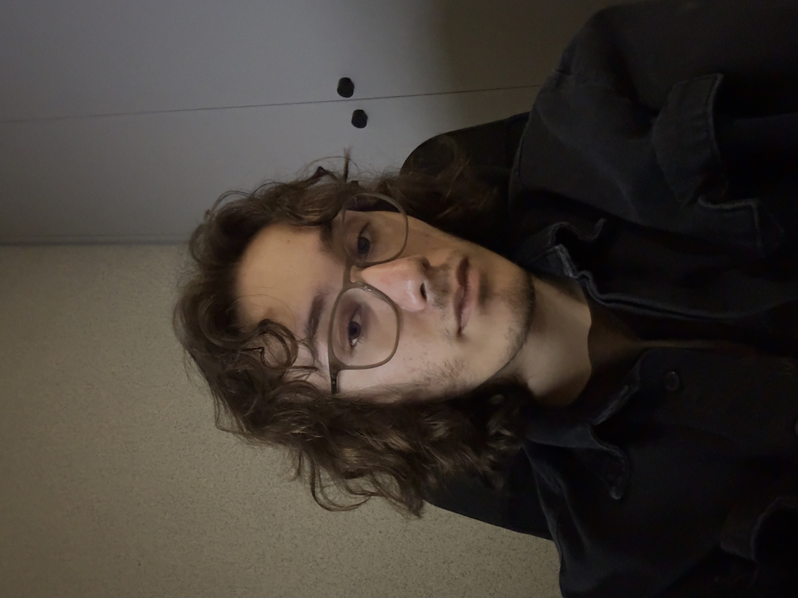

Gustavo Bernardo
Quem Está Por Trás dos Projetos
Entre código e criatividade
Olá! Eu sou Gustavo Bernardo, mas também gosto de usar o nome Lio em alguns dos meus projetos criativos.
Atualmente sou estudante de Análise e Desenvolvimento de Sistemas, com foco em Front-End, mas minha história vai muito além da programação. Sempre fui uma pessoa curiosa e apaixonada por criar coisas, seja através da fotografia, da edição de vídeo, do design ou da tecnologia. Com o tempo, essas áreas começaram a se conectar e me mostraram uma nova forma de transformar ideias em experiências visuais.
O que mais me atrai na tecnologia é a possibilidade de unir criatividade e funcionalidade. Gosto de explorar como design, código e narrativa podem trabalhar juntos para criar algo que seja útil, bonito e memorável ao mesmo tempo. É por isso que me interesso tanto por desenvolvimento web, interfaces visuais e projetos que permitem expressar personalidade através da tecnologia.
Fora da programação, a fotografia ocupa um espaço muito importante na minha vida. Adoro registrar momentos, ambientes e detalhes que muitas vezes passam despercebidos. Fotografar me ensinou a observar melhor o mundo, a prestar atenção em composição, cores, iluminação e emoções — habilidades que também levo para meus projetos digitais.
Também sou alguém que gosta de aprender constantemente. Estou sempre explorando novas ferramentas, estudando tecnologias diferentes e procurando maneiras de melhorar tanto no lado técnico quanto no lado criativo. Acredito que a evolução acontece quando nos permitimos experimentar, errar e continuar construindo.
Hoje meu foco está em desenvolver minhas habilidades em Front-End, criar projetos pessoais, fortalecer meu portfólio e continuar aprendendo sobre design, fotografia e experiências digitais. Cada projeto que desenvolvo é uma oportunidade de aprender algo novo e transformar uma ideia em algo real.
Obrigado por visitar meu portfólio. Espero que você goste de acompanhar um pouco da minha jornada e dos projetos que venho construindo ao longo do caminho.